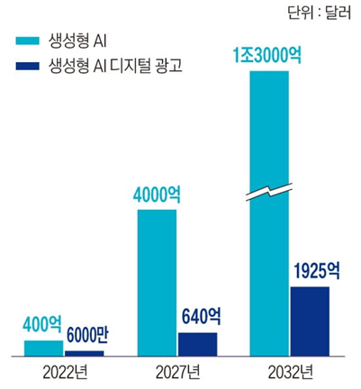
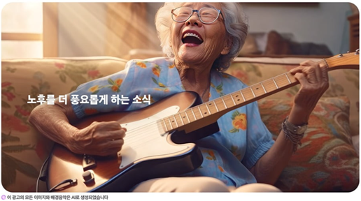
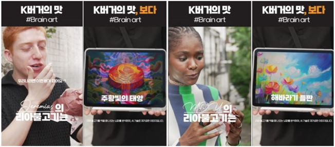

10 인공지능과 광고윤리
엄남현(홍익대학교 광고홍보학부)
10.1 서론
광고 산업의 변화 속도는 기술 개발의 속도와 비례한다고 볼 수 있다. 새로운 혁신적인 기술이 소개되면 그 기술은 광고와 접목되어 새로운 유형의 광고로 소비자를 만나고는 했다. 3D 광고, AR/VR 광고, 메타버스 광고 등이 그 예들이다. 광고 마케팅 산업에서 인공지능(AI)는 단순한 유행어가 아닌 업계를 재편하는 혁신적인 도구로 현재 활발하게 사용되고 있다. 즉, 생성형 AI는 현재 미래의 광고산업의 혁신과 변화를 이끌 게임 체인저로 인식되고 있다. Chat GPT-4, 미드저니(Midjourney), 소라(Sora), 스테이블 디퓨전과 같은 생성형 AI 기술은 광고주가 고객에게 도달하고 참여하는 방식을 총체적으로 혁신할 수 있는 잠재력을 제시하고 있다 (유승철, 2023).
예를 들어, 2023년 6월, 오픈AI가 공개한 동영상 생성 AI ’소라(Sora)’는 큰 반향을 일으켰다 (안옥희, 2024). 간단한 명령어만 입력하면 촬영이나 녹음 없이 AI만으로 고화질 영상을 손쉽게 제작할 수 있었기 때문이다. AI가 만든 영상은 실제 촬영한 것인지, CG로 만든 것인지, 가짜인지 구분하기 어려울 정도로 정밀하고 생생했다. 생성형 AI가 여러 산업에 빠르게 도입되면서 광고업계에서도 AI 활용이 늘고 있다. 문장 작성뿐 아니라 이미지, 영상, 음성 등 창의적인 분야에서도 AI 기술이 확산되며 기업들은 전담 조직을 만들고 자체 플랫폼을 개발하는 등 AI 사업에 박차를 가하고 있다. AI 역량 강화를 위한 세미나와 사내 자체 연구활동 역시 활발하게 이루어지고 있다.
최근 발표된 블룸버그 인텔리전스(Bloomberg Intelligence)에 따르면, 생성형 AI 시장은 2032년까지 1조 3천억 달러에 이를 것으로 예상된다 (한정호, 2024). 이는 2022년 400억 달러에서 시작해 연평균 성장률(CAGR)이 약 42%에 달하는 급격한 성장이다. 이러한 성장은 AI 인프라 투자, 특히 대형 언어 모델(LLM)과 디지털 광고, 특화된 AI 소프트웨어 및 서비스의 수요 증가가 주요 요인으로 작용한다. 특히 아마존 웹 서비스(AWS), 마이크로소프트, 구글, 엔비디아와 같은 대형 기술 기업들이 이 성장을 주도할 것으로 예상되며, AI 모델 훈련을 위한 인프라 수요는 2032년까지 2,470억 달러에 이를 것으로 보인다. 또한 디지털 광고 시장에서만 매년 약 1,920억 달러의 AI 관련 지출이 발생할 것으로 전망된다. 이 보고서는 생성형 AI가 생명과학, 교육 등 다양한 산업을 혁신할 잠재력이 있다고 강조하며, 전통적인 기술 기업들이 AI의 급속한 성장에 적응해야 할 필요성을 지적한다.

생성형 AI는 디지털 광고 분야에서도 큰 변화를 가져오고 있다. 생성형 AI는 2032년까지 디지털 광고 시장에서 약 1,925억 달러의 지출을 유발할 것으로 예상된다. 이는 AI 기술이 광고 제작, 콘텐츠 개인화, 광고 캠페인 최적화 등 여러 영역에서 혁신을 이끌기 때문이다. 디지털 광고에서 생성형 AI는 자동화된 콘텐츠 생성과 개인화를 주도한다. AI는 소비자 데이터를 분석해 맞춤형 광고를 생성하고, 이를 통해 광고주는 소비자의 선호와 행동에 맞춘 광고를 실시간으로 제공하여 광고 효율성을 크게 높일 수 있다. 예를 들어, AI는 광고 카피, 이미지, 동영상 등을 생성하고 각 사용자에게 최적화된 형태로 변형하여 전달할 수 있다. 또한, AI는 광고 성과 분석과 캠페인 최적화에도 활용된다. AI 기반 분석 도구는 실시간으로 광고 성과를 모니터링하고, 데이터를 기반으로 즉각적인 전략 수정을 가능하게 한다. 이를 통해 광고주들은 적은 자원으로 더 큰 효과를 얻고, 변화하는 시장 환경에 신속히 대응할 수 있다. 결론적으로, 생성형 AI는 디지털 광고의 제작부터 배포, 성과 분석까지 전반적인 과정을 혁신하고 있으며, 이를 통해 기업들은 광고 캠페인의 효율성을 극대화할 수 있는 강력한 도구로 자리 잡고 있다.
10.2 본론
10.2.1 국내 광고 대행사들의 생성형 AI를 통한 변화와 혁신
HS애드는 최근 국내 광고 업계 최초로 통합 마케팅 AI 플랫폼 ’대시AI’를 상용화했다 (박용선, 2024). 대시AI는 마케팅 전략 수립부터 광고 제작, 성과 분석까지 생성형 AI를 통해 전체 과정을 지원하는 플랫폼이다. 기존에는 광고 제작이나 성과 측정 같은 부분적인 용도로만 AI가 활용되었으나, 대시AI는 이를 넘어 전반적인 마케팅 업무를 AI로 처리할 수 있다. HS애드는 지난해부터 LG AI연구원과 협력하여 다양한 고객사와 기술 검증을 진행하며 대시AI 개발을 추진해 왔다. 앞으로 HS애드는 대시AI를 통해 브랜드 인지부터 구매에 이르는 모든 고객 경험에서 마케팅 크리에이티브를 강화할 계획이며, 단기적으로는 디지털 광고 제작 과정의 80%를 AI로 처리하는 것을 목표로 하고 있다.

이노션은 2024년 3월 생성형 AI를 활용한 광고 제작 역량 강화를 위해 ’AI솔루션팀’을 신설했다. 이는 2023년 말에 출범한 ’생성형 AI 전담 태스크 포스(TF)’를 격상한 것이다. AI TF팀은 클라이언트 요구에 맞는 다양한 AI 기반 브랜디드 콘텐츠를 기획하고 관련 플랫폼 구축에 주력해 왔다. 2023년 11월 현대자동차 울산 전기차 전용 공장 착공식에서는 AI를 활용해 현대차그룹 창업자인 정주영 회장의 음성을 복원해 큰 관심을 받았다. 또한, 2024년 6월 공개된 현대자동차 트럭 브랜드의 디지털 광고 ’영원히 달리는 자동차’는 캐릭터와 배경 음악, 작사·작곡까지 모두 AI로만 제작되어 주목 받았다 (김성태, 2024).
제일기획은 2023년 7월, AI만을 사용해 만든 삼성생명의 TV 광고를 선보이며 업계 최초로 AI 기반 광고 제작에 성공했다 (강은영, 2023). 이 광고는 챗GPT 출시 후 1년도 안 되어 AI를 광고에 도입한 사례로, 다채로운 표정과 세밀함을 확보하기 위해 3개월간 1만 장이 넘는 AI 생성 이미지를 사용했다. 특히, AI가 주로 서양인 이미지를 생성하는 한계를 극복하기 위해 한국인에 가까운 이미지를 만들기 위한 노력이 돋보였다. 제일기획은 디지털 테크 부서를 중심으로 AI 기술의 비즈니스 활용 가능성을 연구하며 다양한 AI 기반 광고 제작을 시도하고 있다.

대홍기획 역시 AI 활용에 적극적으로 나서고 있다. 2023년 12월 AI 기반 마케팅 시스템인 ’AI 랩’과 논슈팅 필름을 제작하는 ’AI 스튜디오’를 설립해 AI를 크리에이티브에 접목하고 있다 (정상봉, 2024). 2023년 롯데리아 광고에서 AI가 만든 음악을 선보인 데 이어, 햄버거 맛을 AI가 그린 그림으로 표현한 광고도 선보였다. 외국인에게 뇌파 탐지기를 사용해 느낀 맛을 AI로 시각화한 방식이다. 2024년 7월에는 마케팅 전 과정을 하나의 플랫폼에서 지원하는 올인원 AI 시스템 ’에임스’를 출시하며 AI, 빅데이터, 클라우드를 활용한 다양한 기능을 제공하고 있다.

광고 업계에서는 AI가 효율성과 편리성을 가져오는 동시에 인간의 일자리를 위협할 수 있다는 우려도 존재한다. 그러나 창의적 사고와 감정 이해 등은 여전히 AI가 따라올 수 없는 인간 고유의 영역으로 남아 있다. 광고 업계는 AI를 인간의 창의성을 증폭시키는 도구로 보고 있으며, AI가 반복적인 업무를 대신하는 동안 인간은 더욱 창의적인 작업에 집중할 수 있다는 점에서 AI 활용의 중요성을 강조하고 있다. AI를 통해 광고 제작의 효율성을 높이고 비용과 시간을 절감하는 동시에, 인간의 크리에이티브 역량을 극대화하는 것이 핵심이다.
10.2.2 광고 및 마케팅 산업에서 생성형 AI 활용의 장점
생성형 AI의 주요 장점 중 하나는 하이퍼 타깃팅(hyper-targeting)을 통해 초개인화된 광고를 제공하는 능력이다 (유승철, 2023). AI는 소비자 행동, 취향, 관심사 등의 데이터를 분석하여 개별 고객에게 가장 적합한 광고를 제시할 수 있다. 강화 학습(reinforcement learning)을 통해 고객의 행동 패턴을 학습하고, 적절한 시점에 최적화된 광고를 제안함으로써 구매 전환율을 극대화할 수 있다. 예를 들어, 온라인 쇼핑몰에서 AI가 이전 구매 이력과 검색 기록을 분석해 고객이 관심을 가질만한 제품을 자동으로 추천하는 시스템을 생각할 수 있다. 이러한 방식은 단순한 타깃팅보다 훨씬 더 세밀한 개인 맞춤형 광고를 가능하게 하며, 고객과의 상호작용을 통해 신뢰와 충성도를 높이는 데 기여한다. 또한, 초개인화된 광고는 고객에게 맞춤형 경험을 제공함으로써, 광고의 반복 노출로 인한 피로감을 줄이고 긍정적인 브랜드 인식을 형성할 수 있다.
생성형 AI는 블로그, 소셜 미디어, 광고 카피 등 다양한 콘텐츠를 신속하고 대규모로 생산할 수 있다 (유승철, 2023). 이는 마케팅 팀에게 전략적 작업에 더 많은 시간을 투자할 수 있는 기회를 제공하며, 동시에 고품질의 콘텐츠를 지속적으로 제공할 수 있다. 예를 들어, AI는 자동으로 최신 트렌드를 반영한 소셜 미디어 게시물을 작성하고, 고객에게 맞춤형 메시지를 전달하는 역할을 할 수 있다. 다만, 생성형 AI 사용 시 투명성 부족과 개인정보 보호 문제는 신뢰에 영향을 미칠 수 있다. 예를 들어, AI가 생성한 콘텐츠가 명확한 출처를 밝히지 않거나, 개인 데이터를 과도하게 수집하는 경우, 사용자들은 AI 기반 광고에 불신을 가질 수 있다. 또한 AI가 생성하는 저품질 콘텐츠가 검색 엔진에 노출되면, 검색 엔진 최적화(SEO) 전략에도 큰 도전 과제가 될 수 있다. 따라서 생성형 AI 활용 시에는 콘텐츠 품질 관리와 데이터 보호 방안이 함께 마련되어야 한다.
생성형 AI는 실시간으로 고객 데이터를 분석하고, 개인화된 경험을 제공하는 데 탁월하다 (김벼리, 2024). 예를 들어, AI 기반 챗봇은 고객의 문의에 즉각적으로 대응하며, 24시간 개인 맞춤형 고객 지원을 제공할 수 있다. AI는 텍스트나 이미지 기반의 검색 기능을 결합해 온라인 쇼핑 경험을 혁신할 수 있으며, 이를 통해 고객의 요구를 보다 빠르게 해결하고, 기업에 대한 신뢰와 충성도를 높일 수 있다. 예를 들어, 사용자가 특정 상품을 찾을 때 AI가 실시간으로 관련 제품을 추천하고, 구매 결정을 도울 수 있다. G마켓은 AI 알고리즘으로 고객이 최근 구입했거나 살펴본 상품, 검색 빈도, 상품페이지 체류 시간 등을 분석해 개인 맞춤형 상품을 추천한다. 주요 행사에 이 기술을 적용한 결과 G마켓 모바일 애플리케이션(앱) 홈 화면에서 고객당 클릭 횟수는 40% 이상 늘었으며, 클릭한 전체 상품 수는 2배 이상 증가했다고 밝혔다 (김벼리, 2024). 그 외에도, 실시간 고객 지원 외에도 AI는 고객의 피드백을 실시간으로 분석해 제품이나 서비스 개선에 기여할 수 있다. 이로 인해 고객의 만족도를 높이고, 장기적인 관계 구축이 가능해진다.
생성형 AI는 광고 캠페인의 다양한 과정을 자동화하여 비용을 절감하고 효율성을 극대화할 수 있다 (강태구, 2023). 예를 들어, 반복적인 작업인 광고 카피 작성, 이미지 생성, 그리고 타깃팅 전략 설계와 같은 과정을 AI가 처리함으로써 마케팅 팀은 더 창의적이고 전략적인 업무에 집중할 수 있다. AI는 이를 위해 수많은 데이터를 실시간으로 분석하여 최적화된 광고 메시지를 생성하고, 그 결과 더 나은 ROI를 제공할 수 있다. 실례로, 코카콜라는 AI를 활용하여 전 세계적으로 수많은 버전의 광고를 자동으로 생성하고, 각 지역의 소비자에게 맞춤형 메시지를 전달하는 캠페인을 진행한 바 있다. 이렇게 AI를 활용한 광고 자동화는 광고주에게 더 빠르고 비용 효율적인 방법을 제공하며, 기존보다 훨씬 적은 비용과 시간으로 캠페인을 운영할 수 있도록 돕는다. 또한, AI 기반 분석 도구는 광고 성과를 실시간으로 모니터링하여, 캠페인 중간에 즉각적인 피드백을 제공한다. 이를 통해 기업은 실시간으로 전략을 조정하고 최적화할 수 있어, 불필요한 자원의 낭비를 최소화한다. 예를 들어, 페이스북이나 구글 애드 플랫폼에서 AI를 통해 자동화된 A/B 테스트를 진행하면, 어떤 광고가 더 효과적인지 빠르게 파악해 캠페인 성과를 극대화할 수 있다.
AI는 창의적인 광고 콘텐츠 제작을 새롭게 혁신하고 있다. 과거에는 많은 시간과 인력이 필요했던 이미지, 동영상, 음악 생성 작업을 AI가 자동으로 처리할 수 있다. 예를 들어, 마이크로소프트의 Azure AI는 기업들이 AI 기반 이미지 생성 툴을 활용하여 짧은 시간 내에 고품질의 광고 이미지를 만들 수 있도록 지원한다. 이러한 AI 기술을 통해 브랜드는 더욱 창의적이고 독창적인 방식으로 소비자에게 접근할 수 있으며, 이를 통해 광고 차별화를 이룰 수 있다. AI는 또한 글로벌 광고 캠페인에서 매우 유용하다. 다국어 지원 기능을 갖춘 생성형 AI는 각 지역의 언어와 문화에 맞춘 맞춤형 콘텐츠를 생성할 수 있다. 예를 들어, 유니레버는 AI를 통해 전 세계 여러 나라에서 진행된 캠페인에서 지역별로 최적화된 광고 메시지를 제작하여 효과적으로 타깃팅했다. 이는 각 나라의 문화적 차이를 반영한 광고로, 글로벌 기업들이 더욱 강력하게 시장에 다가갈 수 있는 전략적 도구가 된다. 이처럼 생성형 AI는 브랜드 메시지를 글로벌 시장에 맞춤형으로 전달함으로써 광고주들이 세계 각지의 소비자를 효율적으로 타깃팅할 수 있도록 돕는다. AI는 시장별로 다른 요구와 기대에 대응하며, 광고 캠페인이 현지화된 전략을 따를 수 있도록 한다.
위에 언급한 생성형 AI 활용의 장점들 외에도 생성형 AI는 실시간 데이터를 기반으로 하여 변화하는 시장 상황에 빠르게 대응할 수 있다. 소비자 행동이 변화할 때, AI는 이를 즉시 감지하고 광고 전략을 즉각적으로 조정할 수 있어 경쟁 우위를 확보할 수 있다. 그리고 AI는 대규모 데이터를 분석해 소비자의 심리와 행동 패턴을 더 깊이 이해할 수 있다. 이를 통해 더 정교한 타깃팅이 가능해지고, 광고주가 고객의 요구와 기대에 더 정확하게 대응할 수 있다. 또한, AI는 예측 분석 기능을 통해 향후 소비자 트렌드를 예측하고, 미리 광고 전략을 준비할 수 있게 한다. 이를 통해 기업은 미래의 변화에 대해 선제적으로 대응할 수 있으며, 보다 예측 가능한 광고 캠페인을 운영할 수 있다. 이렇듯 생성형 AI는 마케팅과 광고 산업에 혁신적이고 효율적인 도구로 자리 잡으며, 기업들이 더욱 창의적이고 전략적으로 고객에게 접근할 수 있는 다양한 기회를 제공하고 있다.
10.2.3 생성형 AI와 연관된 법적·윤리적 문제
생성형 AI는 다양한 분야에서 혁신적인 변화를 가져오고 있지만, 동시에 법적·윤리적 문제들도 제기되고 있다. 첫째, 저작권 침해 문제는 심각하다. 생성형 AI는 대규모 데이터 세트를 학습하여 새로운 콘텐츠를 생성하는 방식으로 작동한다. 이때 학습에 사용된 데이터가 저작권이 있는 자료라면, AI가 생성한 콘텐츠가 저작권을 침해할 수 있다. 예를 들어, AI가 기존에 저작권이 있는 텍스트나 이미지를 학습하고 이를 기반으로 유사한 작품을 만들어낼 경우, 법적으로 저작권 침해로 간주될 가능성이 있다. 또한, 생성형 AI가 만든 콘텐츠의 저작권이 누구에게 귀속되는지도 논란이 있다. AI가 창작한 결과물의 저작권을 AI 개발자가 가져가는지, AI를 훈련시킨 사용자에게 귀속되는지, 또는 법적으로 저작권이 부여되지 않는지에 대한 명확한 규정이 아직 불확실하다.
둘째, 데이터 사용 및 프라이버시 침해는 현재 진행형이다. 생성형 AI는 방대한 데이터를 활용해 학습을 진행하는데, 이 과정에서 개인 정보가 포함될 가능성이 있다. AI가 개인정보를 활용해 생성된 콘텐츠를 만들거나 이를 기반으로 광고 타겟팅을 할 경우, 개인 정보 보호법(GDPR 등)을 위반할 수 있다. 특히, 민감한 개인정보를 무단으로 사용하거나 동의 없이 데이터가 수집되는 경우 심각한 법적 문제가 발생할 수 있다. 예를 들어, AI 챗봇이 사용자와의 대화 내용을 학습 데이터로 활용할 때, 이 정보가 제대로 보호되지 않으면 프라이버시 침해 논란이 일어날 수 있다. 이와 관련해 데이터 수집과 사용에 대한 투명성을 보장하는 것이 중요하다.
셋째, 생성된 콘텐츠의 신뢰성 및 가짜 정보가 큰 이슈로 떠오르고 있다. AI가 생성한 콘텐츠의 신뢰성은 중요한 윤리적 문제다. 생성형 AI는 매우 사실적으로 보이는 텍스트, 이미지, 동영상을 만들어낼 수 있지만, 이러한 콘텐츠가 진실이 아닐 경우 가짜 정보나 허위 뉴스로 악용될 가능성이 크다. AI가 생성한 이미지나 영상이 실제 상황을 왜곡하거나 조작된 정보를 퍼뜨릴 때, 그 피해는 심각할 수 있다. 실제로, AI를 활용한 딥페이크(Deepfake) 기술은 인물의 얼굴을 합성하여 가짜 영상을 만들어내는 데 사용되며, 정치적 선전, 명예 훼손, 사기 등 다양한 방식으로 악용될 수 있다. 이러한 가짜 정보는 사회적 혼란을 야기할 뿐만 아니라, 피해자의 명예를 훼손하거나 범죄에 악용될 수 있어 규제의 필요성이 제기되고 있다.
넷째, 윤리적 편향 및 차별은 생성형 AI가 가지고 있는 가장 큰 내재적 문제점이라 할 수 있다. 생성형 AI는 학습 데이터에 따라 결과물을 생성하는데, 데이터 자체가 편향되어 있으면 AI도 편향된 결과를 만들어낼 수 있다. 예를 들어, 인종, 성별, 계층 등의 문제에서 AI가 특정 그룹을 차별하거나 왜곡된 관점을 반영하는 결과물을 만들 수 있다. 이 경우, AI는 무의식적으로 사회적 불평등을 강화하거나 잘못된 정보를 전달할 위험이 있다. 또한, AI의 편향된 학습으로 인해 특정 직업군이나 소비자 그룹을 차별하는 마케팅 또는 채용 방식이 발생할 수 있다. 이를 해결하기 위해 AI 알고리즘을 공정하게 설계하고, 편향된 데이터를 사전에 필터링하는 노력이 필요하다.
마지막으로, 책임 소재 문제는 아직도 해결되지 않았다. 생성형 AI가 자율적으로 콘텐츠를 생성하거나 결정을 내릴 경우, 문제가 발생했을 때 책임 소재를 누구에게 물을 것인가에 대한 논란이 있다. AI가 잘못된 정보를 제공하거나 법적 문제를 일으켰을 때, 이를 개발한 기업, 데이터를 제공한 사용자, 또는 AI 시스템 그 자체가 책임을 져야 하는지에 대한 명확한 규정이 부족하다. 특히, 자율적인 의사결정을 내리는 AI가 잘못된 결과를 초래했을 경우, 법적 책임의 범위와 주체를 정의하는 것이 중요한 과제로 남아 있다.
결론적으로, 생성형 AI는 엄청난 가능성을 가지고 있지만, 그와 함께 법적·윤리적 문제들도 다루어져야 한다. 저작권, 데이터 보호, 가짜 정보, 편향성, 그리고 책임 소재 등 여러 문제가 법적 규제와 사회적 합의를 필요로 하며, 이러한 문제들을 해결하기 위한 법적·윤리적 기준이 확립되어야 한다.
10.2.4 생성형 AI 사용을 제한하는 회사들의 움직임
인공지능(AI)의 영향력이 전 세계 산업에 걸쳐 확산되는 가운데, 광고 및 마케팅 분야에서도 AI의 사용을 제한하려는 움직임이 감지되고 있다. AI는 비용 절감과 작업 시간 단축은 물론, 빠르게 변화하는 시장 환경에서 신속하고 효율적인 결과물을 만들어내는 장점이 있지만, 편향성, 오류, 윤리적 문제 등 심각한 단점도 부각되고 있다. 이러한 이유로 일부 브랜드는 광고와 마케팅에서 AI 사용을 경계하며, ’No AI’를 외치는 사례가 늘어나고 있다.
로레알(L’Oréal), 도브(Dove), 레고(LEGO), H&M, 띵스(Thinx) 등 다양한 산업의 대표 브랜드들이 AI 기술을 제한적으로 사용하거나 아예 배제하는 접근 방식을 취하고 있다 (김수경, 2024). 예를 들어, 로레알은 AI가 인간의 머리카락이나 피부톤을 묘사하는 작업에 AI를 사용하지 않겠다는 방침을 세우고 있으며, 상업적 목적에서는 AI 기술을 사용할 수 있지만 인간을 묘사하는 데에는 제한을 두고 있다. AI가 아이디어나 영감을 제공할 수는 있지만, 제품의 이점을 직접적으로 표현하는 데 사용되지 않도록 신중한 접근을 하고 있다.
도브는 2024년 ‘더 코드(The Code)’ 캠페인에서 AI가 미적 기준을 왜곡하는 모습을 비판했다. AI에게 ’세계에서 가장 아름다운 여성’의 이미지를 생성하라는 요청에, 편협한 미적 기준에 따라 금발의 백인 여성 이미지를 만들어낸 것이다. 이 캠페인은 AI의 고정관념을 꼬집으며 ’아름다움’의 다양성을 강조했다. 레고는 지적재산권(IP)과 관련된 콘텐츠 제작에 AI를 사용하지 않겠다는 방침을 고수하고 있다. 제품 디자인과 개발에는 AI 기술을 테스트하고 있으나, 콘텐츠 제작에 있어서는 인간 예술가와의 협업을 지속하겠다는 입장을 밝혔다. 레고는 AI로 생성한 이미지가 비판을 받자, AI를 활용한 콘텐츠 제작을 철회하고 다시 인간 중심의 창작 방식을 강조했다.
그리고 H&M 역시 광고 콘텐츠 제작에 AI를 사용하지 않고 있으며, 윤리적 가이드라인이 마련되기 전까지는 광고에서 AI 활용을 제한하겠다고 밝혔다. 다만, 고객들이 AI를 활용해 옷을 디자인할 수 있는 크리에이터 툴을 제공하는 등 AI 기술 자체에 대한 관심은 여전히 크다. 속옷 브랜드 띵스(Thinx)는 ‘겟 바디와이즈(Get BodyWise)’ 캠페인을 통해 AI가 여성의 건강 문제를 잘못 표현하는 방식을 비판했다. AI가 ’생리’에 대한 이미지를 생성했을 때, 부정적이고 왜곡된 이미지를 만들어냈고, 이에 띵스는 편견을 깨기 위한 올바른 교육의 중요성을 강조하는 메시지를 전했다.
이렇듯 AI는 광고와 마케팅의 창작 방식과 접근법을 변화시키고 있지만, AI 사용에 있어 윤리적·법적 문제를 고려한 신중한 접근이 요구되고 있다. 로레알, 도브, 레고, H&M, 띵스와 같은 브랜드들은 이러한 움직임의 선두에서 AI의 위험성을 경계하고 있으며, 이를 통해 AI의 장점과 단점을 균형 있게 활용하는 방향을 모색하고 있다.
10.2.5 미국 어린이 광고 심의 부서(CARU)의 AI로 생성된 어린이 광고에 대한 가이드라인 제정
AI 기술이 광고 산업에 도입되면서, 특히 어린이 광고에서 AI의 사용을 둘러싼 윤리적 문제와 법적 규제가 주목 받고 있다(최영호, 2024). 광고주는 AI의 장점을 활용할 수 있지만, 특히 어린이와 같은 취약한 소비자 집단에게는 AI 사용이 신중하게 관리되어야 한다. 이는 어린이가 AI로 생성된 콘텐츠와 현실의 차이를 구별할 수 없기 때문이다. 미국의 BBB 내셔널 프로그램의 어린이 광고 심의 부서(CARU: Children’s Advertising Review Unit)는 AI를 활용한 광고와 데이터 수집에 대한 새로운 규정 준수 경고를 발표했다. CARU의 가이드라인은 광고주와 브랜드가 AI가 생성한 콘텐츠가 어린이에게 기만적이지 않고 윤리적으로 올바르게 제작되었는지 확인할 것을 요구한다. 또한, 어린이를 대상으로 하는 AI 기반 광고는 현실과 허구를 혼동하지 않도록 주의해야 하며, AI가 어린이의 개인정보를 수집할 때 어린이 온라인 개인정보 보호법(COPPA)를 준수해야한다.
CARU의 경고는 딥페이크와 같은 AI 기반 기술이 광고에 사용될 때 특히 주의해야 한다고 강조한다. 어린이를 대상으로 하는 광고에서 AI가 실제 사람이나 상황을 시뮬레이션 하거나, AI 생성 캐릭터가 어린이와 소통하는 경우, 이를 통해 어린이를 오도하거나 기만할 위험이 있다는 것이다. 따라서 광고주는 이러한 요소를 사용할 때 투명성을 확보하고, 어린이가 현실과 가상을 명확히 구분할 수 있도록 해야 한다.
CARU는 광고에 AI를 사용하는 브랜드는 다음 영역에서 어린이를 오도하거나 속일 수 있는 가능성에 특히 주의해야 한다고 경고하고 있다. - AI로 생성된 딥페이크, 실제 사람, 장소 또는 사물의 시뮬레이션을 포함한 시뮬레이션 요소, 광고 내 AI 기반 음성 복제 기술. - 제품 묘사(제품 또는 성능 특성을 나타내는 AI를 사용하여 생성되거나 강화된 카피, 사운드, 시각적 프레젠테이션을 포함한 제품 묘사). - 애니메이션 및 AI 생성 이미지와 같은 기술을 통해 어린이의 상상력을 부당하게 이용하거나, 달성할 수 없는 성과에 대한 기대감을 조성하거나, 현실과 공상을 구분하기 어려운 어린이의 특성을 악용할 수 있는 판타지. - 어린이가 실제 사람과 소통하고 있다고 믿을 수 있는 캐릭터 아바타나 시뮬레이션된 인플루언서를 생성하여 어린이와 직접적으로 소통하는 것.
다른 나라에서도 AI로 생성된 어린이 광고에 대한 규제가 강화되고 있다. 유럽 연합(EU)의 경우, 디지털 서비스법(DSA: Digital Service Act)은 AI 기반 광고를 포함한 모든 디지털 콘텐츠가 어린이의 권리와 프라이버시를 보호하는 방식으로 제작되도록 요구한다. 예를 들어, 광고주가 AI를 통해 어린이 데이터를 수집할 경우, 부모의 동의를 명확히 요구하며, 어린이가 광고로 인해 부정적인 영향을 받지 않도록 보호 장치가 마련되어야 한다. 이와 같은 규제들은 AI가 어린이 광고에서 정확성과 투명성을 확보해야 하며, 어린이의 상상력을 과도하게 자극하거나 오도하지 않도록 하는 데 중점을 두고 있다. 광고주는 어린이의 특성을 악용하지 않도록 주의해야 하며, AI가 생성하는 콘텐츠가 윤리적으로 설계되도록 해야 한다.
10.3 결론
생성형 AI는 광고 산업에 있어 미래를 이끄는 핵심 기술로 자리매김하고 있다. AI는 기존의 광고 제작 과정에서 경험하지 못했던 효율성과 창의성을 제공하며, 빠르게 변화하는 소비자 요구에 실시간으로 대응할 수 있게 한다. AI 기술은 데이터를 기반으로 고객의 행동과 선호도를 분석해 초개인화된 광고를 제작하고, 이를 통해 소비자와 브랜드 간의 더욱 깊은 상호작용을 가능하게 한다. 예를 들어, 광고 카피, 이미지, 동영상 등을 자동으로 생성해 각 사용자에게 맞춤형으로 전달하는 AI 시스템은 광고 캠페인의 효율성을 극대화하고, 비용을 절감할 수 있는 가능성을 보여준다. 이는 단순한 자동화 기술을 넘어, 광고 제작과 소비자의 참여 방식을 근본적으로 바꾸는 혁신적인 도구로서의 역할을 수행한다.
AI는 또한 글로벌 광고 캠페인에서 매우 유용한 도구로 활용될 수 있다. 다국어 지원 기능을 갖춘 AI는 각국의 언어와 문화를 고려한 맞춤형 광고 콘텐츠를 생성해, 글로벌 소비자에게 더욱 적합한 메시지를 전달할 수 있다. 이는 다양한 국가와 시장을 타깃으로 하는 기업들이 효율적으로 현지화된 캠페인을 운영할 수 있도록 돕는다. 또한 AI는 실시간 데이터를 기반으로 소비자 트렌드를 분석하고, 이에 따라 광고 전략을 즉각적으로 수정하거나 최적화할 수 있어, 급변하는 시장 상황에서도 경쟁력을 유지할 수 있다.
하지만 이러한 긍정적인 전망에도 불구하고, 생성형 AI가 광고 산업에서 윤리적 문제와 법적 도전에 직면하고 있는 것도 사실이다. 먼저, 저작권 문제는 매우 중요한 이슈로 다뤄지고 있다. AI가 생성한 콘텐츠가 기존 저작물을 모방하거나 그 기반을 둔 경우, 저작권 침해로 간주될 수 있다. AI가 학습하는 과정에서 저작권이 있는 자료를 사용하는 경우, AI가 만들어낸 결과물에 대한 법적 소유권을 명확히 하는 것도 문제로 남아 있다. 콘텐츠를 만든 AI가 아니라 이를 개발하고 사용한 기업과 창작자가 누구인지, 그리고 이들의 권리가 어떻게 보호되어야 하는지에 대한 논의가 필요하다. 또한, AI의 데이터 수집과 프라이버시 침해 문제는 여전히 큰 도전 과제이다. AI는 방대한 데이터를 기반으로 학습하고 광고를 제작하는데, 이 과정에서 개인정보가 포함될 가능성이 크다. 광고주가 소비자의 데이터를 지나치게 활용하거나, 동의 없이 데이터를 수집하는 경우 프라이버시 침해와 같은 법적 문제가 발생할 수 있다. 따라서 AI가 생성하는 콘텐츠와 광고가 윤리적으로 투명성을 보장하고, 데이터 사용이 합법적이며 사용자에게 적절한 보호 장치를 제공해야 한다는 규제가 필수적이다.
더불어, AI는 학습 데이터를 기반으로 편향된 결과물을 생성할 위험이 있다. 만약 AI가 인종, 성별, 계층 등과 관련된 편향된 데이터를 학습하면, 생성된 광고 또한 특정 집단에 대한 편견을 반영할 수 있다. 이는 광고가 사회적 불평등을 강화하거나 왜곡된 정보를 전달할 가능성을 높인다. 따라서 AI 시스템의 편향성을 줄이기 위한 알고리즘 개선과 공정한 데이터 처리가 필요하다. AI는 수많은 데이터를 학습하지만, 그 데이터를 공정하게 처리하는 방법을 찾는 것이 앞으로 중요한 과제로 남을 것이다.
마지막으로, 책임 소재의 문제는 생성형 AI가 자율적으로 의사결정을 내리고 콘텐츠를 생성하는 과정에서 발생할 수 있는 법적 도전이다. AI가 광고 제작 과정에서 문제를 일으켰을 때, 그 책임을 AI 자체에 물을 수 없는 상황에서, 이를 개발하고 운영한 기업, 데이터 제공자, 혹은 광고주가 그 법적 책임을 어떻게 분담할 것인지에 대한 명확한 기준이 마련되어야 한다. 이러한 책임 소재에 대한 명확한 법적 프레임워크가 확립되지 않는다면, AI 기반 광고는 법적 분쟁의 대상이 될 수 있다.
결론적으로, 생성형 AI는 광고 산업의 미래를 근본적으로 변화시킬 잠재력을 가지고 있다. 효율성, 창의성, 그리고 초개인화된 광고 전략을 가능하게 하는 이 기술은 광고주들에게 새로운 기회를 제공하고 있으며, 광고 산업 전체에 혁신적인 도구로 자리잡고 있다. 하지만 AI가 가지고 있는 법적, 윤리적 문제들은 해결되지 않으면 안 되는 과제이다. 저작권 보호, 개인정보 보호, 편향성 제거, 그리고 책임 소재의 명확화와 같은 문제들을 해결하기 위한 사회적 합의와 법적 규제가 필요하다. 이를 통해 생성형 AI는 광고 산업의 미래를 더욱 긍정적이고 윤리적인 방향으로 이끌어 갈 수 있을 것이다.
10.4 더 읽을 거리
김윤명 (2023). 생성형AI의 법과 윤리에 대한 문답. 박영사.
유승철, 상윤모, 엄남현, 양승관 (2023). 인공지능 시대의 광고윤리. 학지사.
한국광고학회 (2023). AI 기반 광고 전략. 온샘.
한국광고홍보학회 (2023). 인간정서와 AI. 한울.
10.5 생각해 볼 문제
- AI가 광고 산업에서 인간의 창의성을 대체할 수 있을까? AI가 광고 제작에서 점점 더 큰 역할을 맡고 있지만, 이러한 기술이 인간의 창의성과 감성을 대체할 수 있을까?
- 초개인화된 광고는 개인정보 보호 측면에서 어떤 문제를 야기할 수 있을까? AI가 소비자의 데이터를 분석해 맞춤형 광고를 제공하는 과정에서 개인정보 침해 우려는 어떻게 해결될 수 있을까?
- 생성형 AI가 만든 콘텐츠의 저작권은 누구에게 귀속되어야 할까? AI가 학습한 데이터가 저작권이 있는 자료라면, AI가 만든 콘텐츠의 소유권 문제는 어떻게 해결할 수 있을까?
- AI가 생성하는 가짜 정보나 허위 콘텐츠를 어떻게 방지할 수 있을까? AI 기술로 생성된 딥페이크나 허위 정보가 사회에 미치는 영향을 어떻게 줄일 수 있을까?
- AI로 생성된 광고에서 문제가 발생했을 때, 법적 책임은 누구에게 있을까? AI가 자율적으로 콘텐츠를 생성했을 때, 그에 대한 책임은 광고주, AI 개발자, 데이터 제공자 중 누구에게 있을까?
10.6 참고문헌
강은영 (2023). 삼성생명, 100% AI 기반 제작 ‘좋은 소식의 시작’ 광고 캠페인 공개. 브릿지경제.
강태구 (2023). 광고와 마케팅, AI는 당장 필요한가. 반론보도.
김벼리 (2024). 내 생각을 읽었니? ’AI 추천’에 꽂힌 유통업계. 헤럴드경제.
김성태 (2024). “생성형 AI로만 제작”… 이노션, 현대차 신규 디지털 캠페인 공개. 마켓뉴스.
김수경 (2024). “광고·마케팅에 AI 금지”… 로레알·도브·레고·H&M·띵스(Thinx)의 전략은?“. 뉴데일리경제.
박용선 (2024). “디지털 광고 80% AI로 제작” HS애드, AI 플랫폼 국내 첫 상용화. 조선일보.
안옥희 (2024). “영상, 카피, 음악, 척하면 척 광고도 AI 시대” 매거진한경.
유승철 (2023). 생성형 AI시대의 마케팅, 어디로 가는가” 반론보도.
정상봉 (2024). 대홍기획의 AI 시스템 ‘에임스’, 롯데 전체 마케터가 쓴다. 매일경제.
최영호 (2024). “CARU, AI로 생성된 어린이 광고에 대한 새로운 지침을 엄격하게 시행한다. 매드타임즈.
한정호 (2024). 엔비디아, KT 초거대 AI 모델 ‘믿음’ 개발·구축 지원. 아이티데일리.